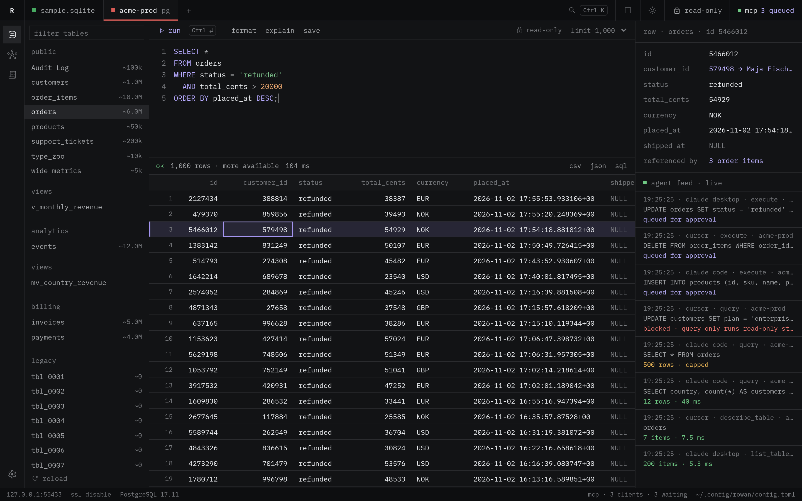
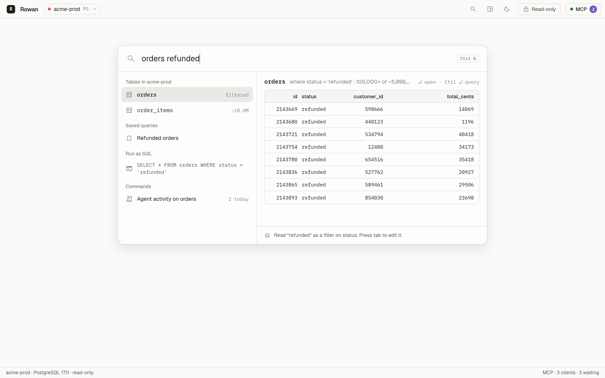
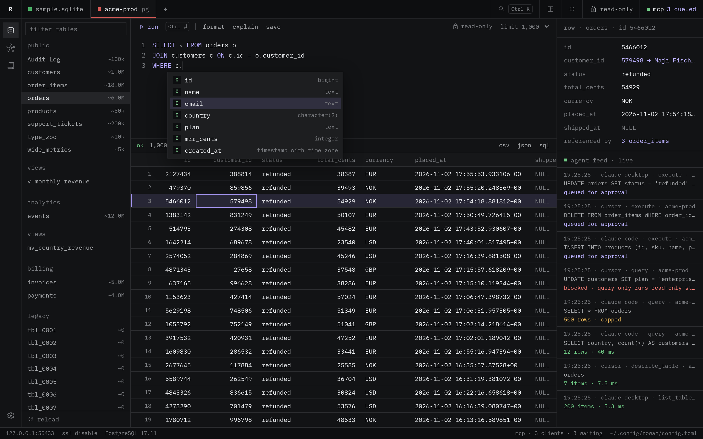
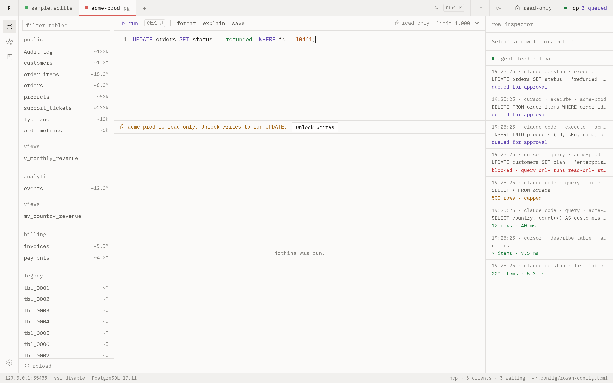
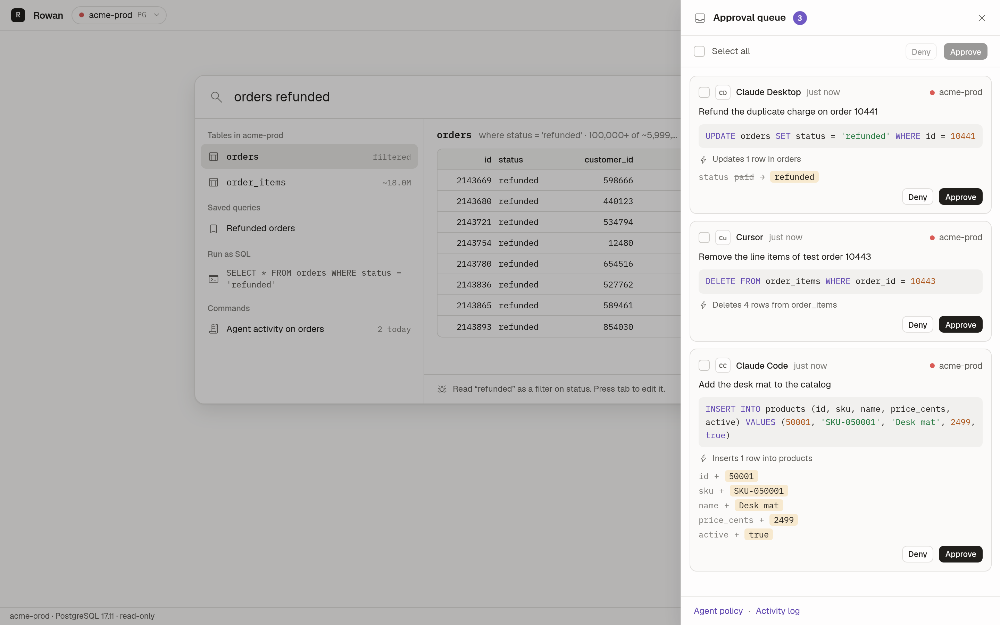
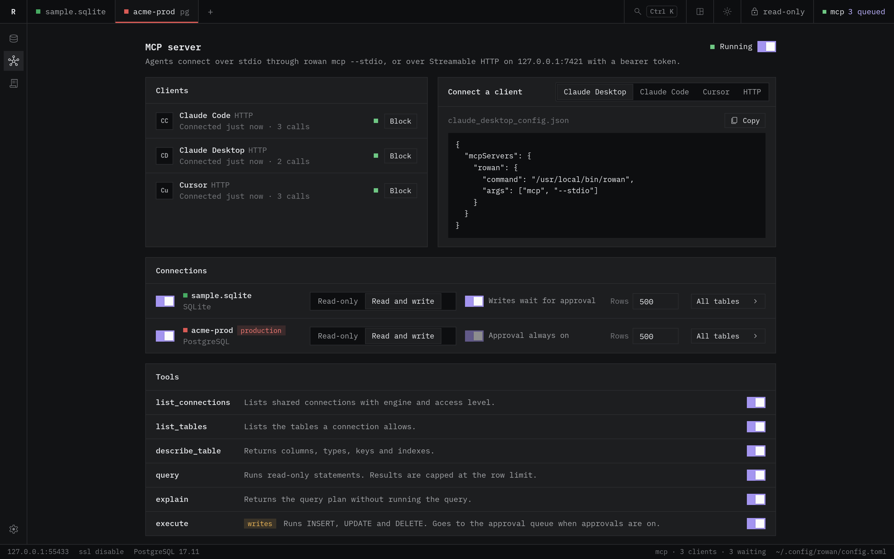

Rowan
A desktop database client for PostgreSQL, MySQL and SQLite.
Every connection opens read-only at the database level. AI agents connect over MCP, and their writes wait for your approval.
- databases
- PostgreSQL, MySQL, SQLite
- agents
- MCP over HTTP and stdio
- built with
- Go and Wails
Work in the layout that fits the task
Rowan has two layouts. Both use the same connections, safety model and dialogs.
To switch the layout, click the layout button in the title bar. You can also press Ctrl+K and choose the switch command. On macOS, press ⌘K.

Workspace
Connections are tabs at the top. The editor and the grid stack in the center. A row inspector and a live agent feed sit on the right.
The inspector shows the selected row and the tables that reference it. To open the row that a foreign key points to, click its value.
Corners are square and the font is mono throughout.
| Area | Contents |
|---|---|
| Title bar | Connection tabs, search, the layout and theme buttons, the lock state and the MCP status |
| Left | A rail for tables, the MCP server and the activity log, then the table list with a filter |
| Center | The SQL editor above the result grid |
| Right | The row inspector and the live agent feed |

Command
There is no permanent sidebar. You open everything from one search surface with a live preview. This layout suits people who visit a database occasionally.
The first word picks a table. The other words become filters. The preview runs while you type.
| Input | Filter |
|---|---|
orders refunded | status = 'refunded'refunded is a sampled value of status. |
orders 10442 | id = 10442A number filters the primary key. |
orders status:shipped | status = 'shipped' |
orders total_cents>5000 | total_cents > 5000 |
customers email~acme | email contains acme |
orders shipped_at:null | shipped_at IS NULL |
- TabWrite the filters in
column:valueform, so you can edit them. - EnterOpen the table.
- Ctrl+EnterOpen the query in the editor.
Write SQL with completion that reads your schema
The editor completes tables, columns, keywords and functions while you type. The list depends on the position of the caret in the statement.
| Caret position | The list shows |
|---|---|
After FROM, JOIN, UPDATE or INTO | Tables and views |
After SELECT, WHERE, ON, SET or ORDER BY | The columns of the tables in the statement |
After alias. or table. | The columns of that table |
After INSERT INTO orders ( | Only the columns of orders |
When two tables in the statement have a column with the same name, Rowan inserts the column with its alias, such as o.id. Keywords follow the case that you type. A function inserts with its parentheses.
- Tab or EnterInsert the selected item.
- Ctrl+SpaceOpen the list at the caret.
- EscClose the list.
When the editor gets focus, Rowan loads the columns of all tables in one catalog query. If the schema has more than 20,000 columns, Rowan loads the columns of a table when a statement names it.

Every connection opens read-only
Rowan sets read-only mode in the database session, not only in the UI. A write fails in the database even if a check in Rowan misses it.
To write, unlock the connection for a fixed time. Rowan then relocks it.
| Statement | Class | Locked connection | Unlocked connection |
|---|---|---|---|
SELECT * FROM orders WHERE status = 'refunded' |
read | Runs | Runs |
UPDATE orders SET status = 'shipped' WHERE id = 10442 |
write | Blocked | Runs |
UPDATE orders SET status = 'shipped' |
destructive | Blocked | Asks for confirmation. It changes every row in the table. |
DROP TABLE invoices |
destructive | Blocked | Asks for confirmation. A drop cannot be undone. |
SET default_transaction_read_only = off |
write | Blocked | Runs. Rowan then closes the session. |

- Read-only at the database level
- The read pool sets
default_transaction_read_onlyon PostgreSQL,transaction_read_onlyon MySQL andquery_onlyon SQLite. - Writes need an unlock
- A write on a locked connection does not reach the database. Unlock for 5, 15, 30 or 60 minutes, or until relaunch. Rowan then relocks the connection and closes its write pool.
- Production connections ask for the name
- To unlock a production connection, type the connection name.
- Destructive statements ask for confirmation
- This applies to
DROP,TRUNCATE, andDELETEorUPDATEwithoutWHERE. - Statements that lift read-only mode count as writes
- Examples are
SET default_transaction_read_only = off,BEGIN READ WRITEandPRAGMA query_only = 0. - Session state does not leak
- When a script runs
SET,USEor its ownBEGIN, Rowan closes that connection after the script. The connection does not go back to the pool.
Agents query your data. You approve their writes.
AI agents connect to Rowan over MCP. You choose the connections and the tables that agents can see.
With approvals on, a write from an agent waits in the approval queue until you approve or deny it.

- reason
- The reason that the agent gave for the write.
- sql
- The statement that the agent wants to run.
- impact
- The number of rows that change, counted with the read pool. For updates and inserts, the old and new values. Rowan never runs a write to compute this preview.
Connect an agent
Rowan serves MCP over Streamable HTTP on 127.0.0.1:7421/mcp. Every request needs the bearer token in ~/.config/rowan/mcp-token.
Rowan refuses requests that carry an Origin header. This blocks web pages and DNS rebinding.
For a client that speaks only stdio, add the bridge. The bridge forwards each call to the running app.
claude mcp add rowan -- /path/to/rowan mcp --stdioReplace /path/to/rowan with the path to the Rowan binary. The MCP server view in Rowan shows a snippet to copy for Claude Desktop, Claude Code, Cursor and plain HTTP.

Tools
| Tool | What it does |
|---|---|
list_connections | Lists the connections that you shared with agents. |
list_tables | Lists the tables in the allowlist, with row counts. |
describe_table | Returns columns, keys, indexes and references. |
query | Runs one read-only statement. Results stop at the row limit. |
explain | Returns the plan. Rowan refuses ANALYZE. |
execute | Runs one write on a read-write connection. With approvals on, the call waits for you. |
Policy for each connection
- Shared or hidden
- Read-only or read-write
- Approve writesAlways on for production connections.
- Row limit
- Table allowlist
Rowan blocks a statement that names a table outside the allowlist. Rowan does not check views that read hidden tables. To protect that data, use database grants.
Build from source
You need Go 1.27, Node 20 or later and the Wails v2 CLI. On Linux, you also need GTK 3 and WebKitGTK 4.1.
- Clone the repository.
- In the repository root, build the app.
- Start the app.
On macOS and Windows, leave out -tags webkit2_41. For live reload during development, run wails dev -tags webkit2_41.
On first launch, Rowan writes ~/.config/rowan/config.toml and a sample SQLite database. The sample has customers, products, orders, order items and invoices.
To skip the build, download a binary from the releases page.
wails build -tags webkit2_41./build/bin/rowan